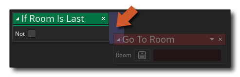

Description
This action will check to see if the current room is the last room as listed in the resource tree. The action will return true if the current room is the last in the resource tree and false if it is not. You can flag the not checkbox to turn this into "If Room Is NOT Last".
Note that to add actions into the "if" block, they should be dropped to the side of the action, as shown in the image below:
These actions will now be run if the "if" evaluates to true, while any actions dropped elsewhere will be performed after the "if" block.
Action Syntax:

Example:

The above action block code checks to see if the current room is not the last one as listed in the resource tree. If it is not then the game will go to the next room in the resource tree, otherwise it will go to a specific room.